A central requirement of any data analysis package is the possibility of
visualisation of data. PDL deals with this in a slightly different
manner than some other packages in that no built-in graphics library is
used, instead it uses other freely available external packages. In this
chapter we will focus on the main 2D plotting package, PGPLOT.
Here we will cover the use of the PDL::Graphics::PGPLOT package which
uses the freely available PGPLOT subroutine package written by Tim
Pearson. This is a very powerful package and PDL::Graphics::PGPLOT
does not provide easy access to everything in the PGPLOT package,
although it hopefully does most of what you will need.
For advanced use you might have to use some PGPLOT commands directly,
see Using PGPLOT commands directly for a discussion of this. But
even if you don't you are recommended to at least keep a copy of the
PGPLOT documentation lying around. It is available from http://www.astro.caltech.edu/~tjp/pgplot/.
The goals of this section is to familiarise the reader with the PDL
interface to PGPLOT and show how complicated datasets can be easily
manipulated and displayed. The focus will be on interactive use to
facilitate learning, but at the end we will turn to an object-oriented
interface that might be more suited for scripts.
To use PDL::Graphics::PGPLOT it is necessary to have the PGPLOT
package installed, and in addition have the Perl PGPLOT module (written
by Karl Glazebrook and available through CPAN) installed and working. In
the following we will assume that you have this all set up.
2-dimensional graphics in PDL is normally performed by the
PDL::Graphics::PGPLOT module. The PDL::Graphics::PGPLOT package
must be use'ed to give access to the commands. This introduction
will be based on interactivity and use of perldl
perldl> use PDL::Graphics::PGPLOT;
That is what you need to get running. We will now play around with a
couple of commands before we turn to a systematic overview in the next
two sections. We will concentrate on the line and points commands
which draws continuous lines and individual plotting symbols
respectively. The final result should look similar to Figure 1.
Figure 1: Our first try at using PDL::Graphics::PGPLOT.
The first step is to start perldl and use the
PDL::Graphics::PGPLOT package (some output is suppressed)
> perldl
Type 'help' for online help
Type 'demo' for online demos
Loaded PDL v2.4.3
perldl> use PDL::Graphics::PGPLOT
Now we need to open a graphics device - there are quite a few that are
supported by PGPLOT, here we will use a normal plot window that can be
re-used:
perldl> dev('/xs')
You should now have a large plot window on your screen, if you had some
problems try to do dev('?') which will give you a list of available
devices and allow you to choose one.
We first need to define a variable to have something to plot. The first
plan is to simply plot a parabola and a Gaussian (bell) function as in
the left panel in Figure 1, so we need an x-variable that is both
positive and negative.
perldl> $x=zeroes(100)->xlinvals(-5, 5)
This creates a 100 element piddle starting at -5 and ending at 5. We can
then very easily draw a parabola:
perldl> line $x, $x*$x/12.5, {LINESTYLE=>'Dashed', Colour=>red}
which should draw a nice parabola with a dashed red line. As
should be clear the line command draws a line and takes the x and y
coordinates of the points on the line as arguments and options to the
command are given as an anonymous hash.
We now want to plot a Gaussian on top of this, but if we were just to
issue another plot command it would by default erase the screen, so
instead we call the hold function to stop that from happening:
perldl> hold
We can then continue plotting, now using symbols instead of a line:
perldl> points $x, exp(-$x*$x/2), {Symbol => 'Plus'};
Again, note that the function points function plots symbols instead
of lines. PGPLOT has a large array of symbols, normally accessed using
numbers, but the most common have text aliases defined.
The only thing left for us now is to ensure that the next plot will
start afresh. Since we issued the hold command all subsequent plots
will overplot the existing ones and since we do not want that anymore,
we therefore have to release the device to the next set of plot
commands:
perldl> release;
As a second example we will show how you can create plots with error
bars. We will just carry on so the previous plot will be erased (enjoy
it while you can). We first have to define some variables for the plot,
so we need the x and y variables and the error on y.
perldl> $x = pdl(0.88, 0.223, 0.815, 0.606, 0.188, 0.360)
perldl> $y = pdl(24.52, 22.24, 25.43, 23.54, 22.63, 23.59)
perldl> $dy = pdl(0.57, 0.07, 0.84, 0.27, 0.12, 0.28)
In the previous example we let PGPLOT decide on the plotting ranges we
were going to use, but now we want some more control over it. To do so
we set it up using the env command:
perldl> env(0, 1, 22, 26)
which sets the X-axis to go from 0 to 1 and the Y-axis from 22 to 26.
That is really all that is needed before plotting the error bars:
perldl> errb $x, $v, $dv, {Symbol => 'Square'};
And here we go! It almost looks like science. Of course in real life
error-bars might not be symmetric (although you often wish they were),
and we will explain how to do this later when we discuss errb in more
detail below.
Before we proceed to an overview of all commands in
PDL::Graphics::PGPLOT it is necessary to define a couple of terms:
The first is the concept of device - this is what the plotting
commands work on, often this will be a screen device which shows
resulting output on the screen in a window, but it can also be output to
a file in some sort of format. Then inside each device there is a
plotting area within which plotting commands gives a noticeable
result.
Another important concept is holding of plots. When a plot is held,
any subsequent plot commands will plot on top of the existing plot. To
explicitly hold a plot you issue the command hold and to release it
again you use release.
Finally most commands described in the following take a set of
options. These are values that can be set to modify the default
behaviour of the plotting routine and are very useful so we will first
discuss the standard options and how options are specified.
As mentioned above and seen in the brief introduction to the PGPLOT
interface earlier, we use options to modify the behaviour of plot
commands. Below we will often see examples of specific options, those
that are only recognised by a particular plot command. However in
addition there are general options that are recognised by many or all
plot commands. These are normally the options you use most so it is
important to know these.
But first, how do you specify an option? If you read through the
walk-through above you have probably already realised that they are set
as keys in a hash:
line x, y {Colour => 3}
However due to the way they are implemented in the code (using the
PDL::Options package) the hash is more flexible than normal Perl
hashes. Firstly the options are case-insensitive and secondly some have
synonyms defined so that for instance Color and Colour are both
accepted to avoid bad feelings on one side of the Atlantic. Finally
most, if not all, options can be shortened so that Lines will be
interpreted as LineStyle. This is mostly useful when working on the
perldl command line however as it is error-prone in scripts (imagine
that someone later implemented a Lines option which did something
totally different, like draw 10 parallell lines, yeah, quite likely).
The following listing of standard options is based on the on-line
documentation which you can access yourself inside perldl as
perldl> help PDL::Graphics::PGPLOT::Window
or using the pdldoc command
bash$ pdldoc PDL::Graphics::PGPLOT::Window
It is not envisaged that the standard option set will be significantly
expanded from that listed here, but the on-line documentation should
reflect any changes if they take place.
Arrow-
This option allows you to set the
arrow shape, and optionally size for arrows for the vect routine. The
arrow shape is specified as a hash with the key FS to set fill style,
Angle-
sets the opening angle of the arrow head, Vent to set how
much of the arrow head is cut out and Size to set the arrowsize.
The following code:
perldl> $opt = {Arrow => {FS=>1, Angle=>60, Vent=>0.3, Size=>5}};
will set up an options hash for a broad arrow of five times the normal
size.
Alternatively the arrow can be specified as a set of numbers
corresponding to an extention to the syntax for the PGPLOT command
pgsah . The equivalent to the above is
perldl> $opt = {Arrow => pdl([1, 60, 0.3, 5])};
For the latter the arguments must be in the given order, and if any are
not given the default values of 1, 45, 0.3 and 1.0 respectively will be
used.
Arrowsize-
The arrowsize can be specified separately using this option
to the options hash. It is useful if an arrowstyle has been set up and
one wants to plot the same arrow with several sizes. Please note that it
is not possible to set arrowsize and character size in the same call
to a plotting function. This should not be a problem in most cases.
perldl> $opt = {ARROWSIZE => 2.5};
Axis-
Set the axis type (see the env command below in
Setting up the plot area). It can either be specified as a
number, or by a name as in the following table
Name Number Explanation
---- ------ -----------
Empty -2 draw no box, axes or labels
Box -1 draw box only
Normal 0 draw box and label it with coordinates
Axes 1 same as Normal, but also draw X=0, Y=0 axes
Grid 2 same as Axes, but also draw grid lines
LogX 10 draw box and label X-axis logarithmically
LogY 20 draw box and label Y-axis logarithmically
LogXY 30 draw box and label both axes logarithmically
The reason why this command is accepted by most commands is that when a
command is called before a plot area is set up it will implicitly call
env which interprets this option.
AxisColour-
Set the axis colour using the same syntax as for the Colour option below.
Border-
Normally the plot limits are chosen so that the plotted points just fit
inside the plot area; with this option you can increase (or decrease)
the limits by either a relative (ie a fraction of the original axis
width) or an absolute amount. Either specify a hash array, where the
keys are Type (set to 'Relative ' or 'Absolute ') and Value
(the amount to change the limits by), or set to 1, which is equivalent
to Border => { Type => 'Rel', Value => 0.05}.
Charsize-
Set the character/symbol size as
a multiple of the standard size. $opt = {Charsize => 1.5}
Colour-
Set the colour to be used for the subsequent plotting - it has
Color as a synonym. This can be specified as a number, and the most
used colours can also be specified with name, according to the following
table:
0 White 4 Blue 8 Orange
1 Black 5 Cyan 14 Dark gray
2 Red 6 Magenta 16 Light Gray
3 Green 7 Yellow
However there is a much more flexible mechanism to deal with colour. The
colour can be set as a 3 or 4 element anonymous array (or piddle) which
gives the RGB colours. If the array has four elements the first element
is taken to be the colour index to change. For normal work you might
want to simply use a 3 element array with R, G and B values and let the
package deal with the details. The R,G and B values go from 0 to 1.
In addition the package will also try to interpret non-recognised colour
names using the default X11 lookup table, normally using the rgb.txt
that came with PGPLOT.
For more details on the handling of colour it is best that the user
consults the PGPLOT documentation. Further details on the handling of
colour can be found in the documentation for the internal routine
_set_colour.
Filltype-
Set the fill type to be used by poly, circle, ellipse and
rectangle. The fill can either be specified using numbers or name,
according to the following table, where the recognised name is shown in
capitals-it is case-insensitive, but the whole name must be specified.
1 Solid
2 Outline
3 Hatched
4 CrossHatched
$opt = {Filltype => 'Solid'} (see below for an example of hatched
fill)
Font-
Set the character font. This can either be specified as a number
following the PGPLOT numbering or name as follows (name in capitals):
1 Normal
2 Roman
3 Italic
4 Script
Note that in a string, the font can be changed using the escape
sequences \fn , \fr , \fi and \fs respectively. See the
documentation in Text and legends for more information regarding
escape sequences.
$opt = {Font => 'Roman'}; gives the same result as $opt = { Font=> 2 };
Hatching-
Set the hatching to be used if either filltype 3 or 4 is selected (see
above). The specification is similar to the one for specifying arrows.
The arguments for the hatching is either given using a hash with the key
Angle to set the angle that the hatch lines will make
with the horizontal, Separation to set the spacing of the hatch lines
in units of 1% of min(height,width) of the view surface, and Phase
to set the offset the hatching. Alternatively this can be specified as
a 1x3 piddle $hatch=pdl[$angle, $sep, $phase].
$opt = {Filltype => 'Hatched', Hatching => {Angle=>30, Separation=>4}};
Can also be specified as
$opt = {Fill=> 'Hatched', Hatch => pdl [30,4,0.0]};
For another example of hatching, see the command poly in Drawing lines and plotting points
below.
Justify-
A boolean value which, if true, causes both axes to drawn to the
same scale. If you want more information about this option you are
advised to consule the PGPLOT documenation for the pgenv command.
Linestyle-
Set the line style. This can either be specified as a number following
the PGPLOT numbering or as a name as shown in the following table.
1 Solid
2 Dashed
3 Dot-dash
4 Dotted
5 Dash-dot-dot
Thus the following two specifications both specify the line to be dotted:
$opt = {Linestyle => 4};
$varopt = {Linestyle => 'Dotted'};
The names are not case sensitive, but the full name is required.
Linewidth-
Set the line width. It is specified as a integer multiple of 0.13 mm.
$opt = {Linewidth => 10}; # A rather fat line
PlotPosition-
The position of the plot on the page relative to the view surface in
normalised coordinates as an anonymous array. The array should contain
the lower and upper X-limits and then the lower and upper Y-limits. To
place two plots above each other with no space between them you could do
$win->env(0, 1, 0, 1, {PlotPosition => [0.1, 0.5, 0.1, 0.5]});
$win->env(5, 9, 0, 8, {PlotPosition => [0.1, 0.5, 0.5, 0.9]});
Symbol-
The plot symbol to use, with the default being 17 which gives a small
filled circle. This is an option for points and errb at the
moment, but could be used for others too. It is either given a piddle
with the same number of elements as the plot variable, a name (or
number) specifying the symbol to use according to the following
(recognised name in capital letters):
0 Square 4 Circle 9 Sun
1 Dot 5 Cross 11 Diamond
2 Plus 7 Triangle 12 Star
3 Asterisk 8 Earth 17 Default
PGPLOT has support for a much larger number of symbols. The reader is
advised to consult the PGPLOT documentation for further information or
write a short program that loops through all symbols. Note however that
there are a lot. For instance symbol 2830 is a cyrillic character
- the system used is the Hershey system for symbols. In addition you
can draw regular polygons with n-sides by setting the symbol to -n,
so that $opt = {Symbol => -n }; but be aware that -1 and -2
draws a dot with the diameter set to the current linewidth.
Title-
The title on top of the plot box.
XTitle-
The title for the X-axis of the plot.
YTitle-
The title along the Y-axis.
The default options for screen display are not ideal for hard-copies
(typically PostScript). Thus there is a separate set of options for
certain properties when the output device is a hard-copy one. Here we
will quickly summarize these
HardLW-
The line width used on hard-copy devices. The default is 4.
HardCH-
The character size used on hard-copy devices. The default is 1.4.
HardFont-
The default font used on hard-copy devices. It defaults to 2.
HardAxisColour-
The default colour to draw the axis with on a hard-copy device. This is
particularly important since light green (default screen colour) is not
very visible on paper. The default is 1 (black). The setting of colours
work as with Colour
HardColour-
The default plot colour on hard-copy devices, it defaults to 1 (black).
These options should be set either in the call to dev (see
Setting up the plot area) or redefined using the
method outlined in the next section.
You might not be happy with the default settings for the various options
and want to set a different value permanently instead of specifying it
with every call to dev , env or some other command. There is some
support for this, but it is limited in that it is not case-insens itive
nor does it have synonyms (except for colour/color) so the options
must be written as above. (You will be notified if you did something
wrong).
That said it is fairly easy to use. You would normally set this in your
.perldlrc file (see ' help\InsetSpace ~perldl ' in the perldl
shell or ' pdldoc perldl '). The relevant function is
set_pgplot_options which takes a hash as argument with the options
and their values, as in the following example:
use PDL::Graphics::PGPLOTOptions ('setpgplotoptions');
setpgplotoptions('Device' => '/xs', 'LineWidth' => 10);
Note that some settings might affect more than you like. In particular
the LineWidth and LineStyle options will also affect the axis and
axis labels drawn. However, character size, device default plot symbol,
border and other options can be conveniently be specified in this way.
The first step for the budding plot maker is to set up the drawing area.
This involves selecting what device you want to create the plots on and
then setting the region you want to plot in .
The destination for your plot commands is set with the dev command,
and with different arguments to dev you can send plots to various
output devices such as:
GIF files - dev('giffile.gif/gif')
Postscript files - dev('filename.ps/ps')
Colour Postscript files - dev('filename.ps/cps')
X-windows plotting windows - dev('/xs')
If you wish to have several plotting panels per page you can specify the
number in the x and y directions as further arguments to dev so that
to get four panels you would write dev('/xs', 2, 2).
For more detailed control over the created device, you can specify
various options. The main four options you might use are:
Aspect-
The aspect ratio of a newly created output device. If your device is a
graphics window under a window system, this might or might not be
applied when the window is created, but it should be updated as soon as
you plot to it. The default value is 0.618, i.e. the
golden ratio.
WindowWidth-
The width of the created output window. The width is specified in units
of inches, which is reasonably easy to deal with when printing out, but
if your device is a graphics window it is all a bit more unclear since
different setups might have different ideas of what an inch corresponds
to in pixels.
WindowXSize-
The X-size of the plot window, specified as WindowWidth and combined
with Aspect if WindowYSize is not set.
WindowYSize-
As above but for the Y-size.
NX and NY-
These two options set the number of panels in the X and Y direction
respectivel y and are alternatives to specifying the numbers of panels
directly in the call to dev as dev(<device>, <nx>, <ny>).
The options are specified in an anonymous hash so that:
perldl> dev('/xs', {NX => 4, NY => 2})
will create a plot window with four panels in the X-direction and 2 in
the Y-direction, with a default aspect ration and size. Alternatively
the same window could have a specified width and aspect ratio by
specifying those options as
perldl> dev('/xs', {NX => 4, NY => 2, Aspect => 1, WindowWidth => 5})
However dev does not actually draw anything for you, it merely selects
the output device. To set up a plot you either call a plot command
directly, or if you want more control over the axis ranges you use the
command env. This useful command takes the upper and lower limits in X
and Y as input:
env(0, 1, 0, 1);

sets up a plotting area with both axes going from 0 to 1. If a
logarithmic axis is desired this can be achieved by passing an option to
the env command, we can also use this to set the axis labels:
env(1, 1000, 0, 1, {Axis => 'LOGX', Xtitle => 'X-axis', Ytitle => 'Y-axis'});
Further information on the Axis option can be found in Options in plot commands.
It is important to realise that when you call env explicitly it
automatically holds the plot for you, so subsequent plot commands will
plot on top of the plotting area, and if you want to make a new plot you
need either to call env again or call release explicitly.
The most important commands in the graphics package are probably the
line drawing and point plotting commands line and points . The
most basic command is points which plots particular symbols at given
x and y values:
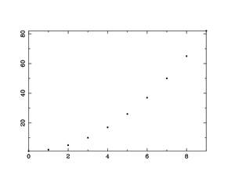
perldl> $x = sequence(10)
perldl> $y = $x*$x + 1
perldl> points $x, $y
The action of the points command can be modified by adding options.
The most important is Symbol which changes the plot symbol and
Charsize which changes the size of plot symbols; in addition the
Plotline option is a toggle which if set causes a line to be drawn
through the plots:
perldl> points $x, $y, {Symbol => 'Triangle', Plotline => 1, Charsize => 5}
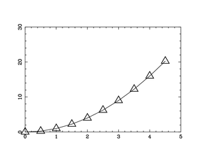The string Triangle is equivalent to symbol number 7 and in general
symbols will have to be accessed using the numerical system, but there
are textual equivalents for many commonly used symbols (see Options in plot commands). The points command does also accept a
piddle as the symbol value, in which case it should have the same length
as $x and $y and each point will be plotted with the corresponding
symbol value.
Closely related to points is the routine for plotting symbols with
error-bars, errb . This can be called in a variety of ways to allow
for various ways of giving errorbars and whether horizontal or vertical
errorbars are required. A typical call is:
perldl> env(0, 5, -2, 30)
perldl> $x=sequence(10)/2.0; $y=$x*$x
perldl> $dy = sqrt($x+1);
perldl> errb $x, $y, $dy, { Symbol => ’Square’}
which plots
squares with symmetrical vertical error-bars. To get error bars in the
horizontal direction one gives these before the y-errors. Likewise it is
possible to get asymmetric error-bars by giving the upper and lower
limits of the error bars separately for the X and Y variables as in the
following example:
perldl> $x2 = pdl(1.5, 2.3, 4.7)
perldl> $y2 = pdl(10, 22, 0)
perldl> $dx = $x2->zeroes(); # No X-errors
perldl> $yu= pdl(12,29,1)-$y2
perldl> $yl= $y2 - pdl(7, 20, -2)
perldl> errb $x2, $y2, $dx, $dx, $yl, $yu, {Symbol => ’Triangle’}
We saw above that we could draw
lines between points by setting the PlotLine option
to points, however there are much better ways to draw lines. The
basic line-drawing command is line which draws a straight line
between each point.
perldl> $x = zeroes(10)->xlinvals(-3, 3)
perldl> line $x, sin($x)
The style, width and colour of the line can be changed with the options
Style, LineWidth and Colour / Color respectively as outlined
in Options in plot commands.
A very similar command is bin which is useful for plotting
histograms. This command draws horizontal lines between x(i) and
x(i+1) with the value y(i).
perldl> $x = zeroes(10)->xlinvals(-3, 3)
perldl> bin $x, sin($x)
By default the routine assumes that the X-values are the start points of
the bin, if instead your values are for the centers of the bins, you
need to set the option Centre/Center to a true value. In addition
the appearance of the lines can be modified using the same options as
for the line command.
Finally the poly command is like line but fills the polygon
defined by $x and $y with the chosen fillstyle (defaults to solid
fill). If you display this you should consider putting
FillStyle => 'Outline' in your .perldlrc file as explained in
Setting default values for options, or you can set it explicitly as in the following example:
perldl> $x=zeroes(20)->xlinvals(-2,2);
perldl> $y=exp(-$x*$x);
perldl> $xpoly = append($x->where($x <= 0), pdl(0));
perldl> $ypoly = append($y->where($x <= 0), pdl(0));
perldl> poly $xpoly, $ypoly, {FillType => ’Hatched’};
In this example
it is worth noting the added complications to ensure that the polygon is
closed. In addition we have used the option FillType
to change the style of fill used. This can be finely adjusted if
necessary, for further examples see the PDL::Graphics::PGPLOT manpage
and the discussion of FillType in Options in plot commands.
PGPLOT was originally designed for astronomy and as such it has good
support for the display of 2D-data. In PDL this support has been
simplified and there is now only one command for image display, imag
, which internally chooses between different PGPLOT display commands.
The simplest use of imag is to let it act on a 2D piddle so:
perldl> $a = rvals(50,50, {Center => [ 25, 25]});
perldl> imag $a;
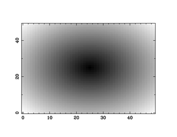However, most likely you will find that the shape is not
circularly symmetric because the aspect ratio of your graphics window is
different from 1. How then can we correct this? The easiest solution is
probably to make sure that your graphics device has aspect ratio 1 by
giving the Aspect option to the dev command
(see Setting up the plot area).
That isn't always an option though, and an alternative approach is to
use the option Pix to the imag command. This lets you adjust the
aspect ratio of the image pixels. You can in addition specify the number
of image pixels per screen unit with the option Pitch so that to
display the previous image with square pixels and 2 image pixels per
screen pixel you use:
perldl> imag $a, { Pix => 1, Pitch => 2 }
You can also use Unit to specify the unit used for scaling and
Scale for the reciprocal of Pitch, see the PDL::Graphics::PGPLOT
documentation for details. The Pix option only adjusts the
coordinate ranges and this might not always be what you require. In such
situations a solution might be to create a square plot window directly
as mentioned earlier.
In addition you might want to specify a stretch of the gray-scale of the
image. This can be obtained first by specifying the max and min values
of the displayed image (everything above is set to the max value and
everything below to the min value). This is set with the Min and
Max options. Additionally it is possible to adjust the image transfer
function using the option ITF. Allowed values are Linear, Log
and Sqrt.
You can also add a colour bar (colour wedge in PGPLOT parlance) to the
image display. This is accomplished either using the draw_wedge (see
below) command directly or by setting the DrawWedge option to true in
your call to imag . If you want to pass options to the draw_wedge
command, you can do that with the Wedge option. See below for
further details.
Finally a very useful feature of PGPLOT that is relevant both to images
and also the contour plots (see below) is the concept of a transform
matrix. This is a 6 element vector, T(i) which maps input
pixels into display pixels so that pixel i,j is mapped to:
X(ij) = T0 + T1(i) + T2(j)
Y(ij) = T3 + T4(i) + T5(j)
It is always simplest to refer to this equation the first few times one
sets up a transform vector.You use this whenever your pixel positions in
the real world were different from that represented by your input image
array.
use PDL;
use PDL::Graphics::PGPLOT;
# Create two plot areas in the X-directions dev('/xs', 2, 1);
# Create a Gaussian around the center of the image
$a = rvals(101, 101, {Center => [50, 50]});
$y = exp(-$a*$a/50.);
# Display with a linear transfer function
imag $y;
# This transform vector maps the extreme points to
my $tr = pdl(-10, 1.0/5.0, 0, -10, 0, 1.0/5.0);
# Finally display the image with the transform and
# a logarithmic transfer function.
imag $y, {Transform => $tr, ITF => 'Log'};
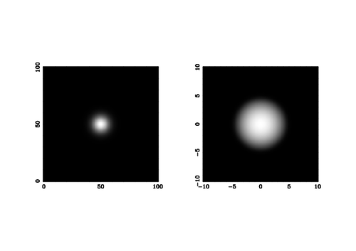Here we are contrasting two different ways of displaying the same image.
On the left is the default display of a Gaussian, whereas on this right
is the result when mapping the pixels to a range from -10 to 10
with a logarithmic transfer function. Here we show the use of the ITF
and and Transform options. Note that using Transform in
conjunction with Pix is going to lead to unwanted results!
It is often desireable to annotate an image with a colour wedge showing
the range of values in the image. This is accomplished with the
draw_wedge function in PDL::Graphics::PGPLOT (but you can avoid
calling this directly by setting the DrawWedge option in your call to
imag , see above). This function should normally give a decent result
without the user setting any options except the Label option which
sets the annotation, but occasionally it is necessary to change its
behaviour and that is done by setting the following options:
Side-
What side the wedge will appear on, the default is the right side and it
is specified as a single character, ' B ' for bottom, ' L ', '
T ' and ' R ' for left, top and right respectively.
Displacement-
The distance away from the axis. Default=2.
Width-
The width of the wedge. Default=3
Foreground-
The value to set the foreground
colour to. This can be referred to as Fg as well. The default is the
max value used by imag when drawing the image.
Background-
The value to set the background
colour to. This can be referred to as Bg as well. The default is the
min value used by imag when drawing the image.
Label-
The label used to annotate the wedge.
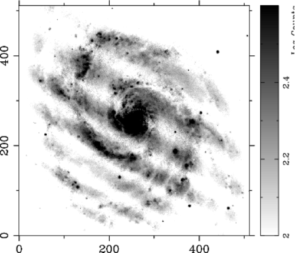
dev '/xs', {WindowWidth => 6, Aspect => 1};
$im = rfits('Frei/n4013lJ.fits');
$im += abs(min($im)-1);
$im = log10($im);
imag($im, {PlotPosition => [0.1, 0.85, 0.175, 0.925], Min => 2.6, Max => 2.0 });
draw_wedge({Wedge => {Width => 4, Label => 'Log Counts', Displacement => 1}});
Note that you will sometimes need to directly set the plot size to avoid
clipping in the display. A full example that shows the use of
draw_wedge can be seen in the Figure above where we display a galaxy
and display a look-up table next to it.
Contour plots are very similar to image displays and display lines at
particular levels of the image. The function to create contour plots is
cont which at the simplest level only takes a 2D array as its
argument.
$a = sequence(100,100); cont $a;
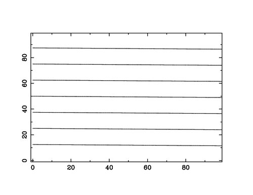That might be all you need, but most likely you would like to specify
contour levels, label contours and maybe draw them in different colours.
You use the option Contours to give the wanted contour levels as a
piddle and Labels to give an anonymous array of strings for labels as
shown in the example below:
use PDL; use PDL::Graphics::PGPLOT;
dev(’/xs’);
$y = ylinvals(zeroes(100,100), -5, 5);
$x = xlinvals(zeroes(100,100), -5, 5);
$z = cos($x**2)+sin($y*2);
cont $z, {Contours => pdl(-1, 0, 1), Labels => [’-1’, ’0’, ’1’]};
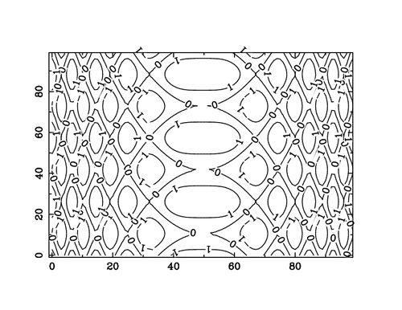In addition it is possible to colour the labels differently from
the contour lines (LabelColour), to specify the number of contours
instead of their values (NContours) and to draw negative contours
as dashed lines and positive as solid lines by setting the option
Follow to a value 0 >>.
Overlaying a contour plot on top of an image is as easy as displaying
the image, call hold and display the contour plot. The reader might
want to try a colour version of the example above ( $z as in the
example):
perldl> ctab('Fire');
perldl> imag $z; hold;
perldl> cont $z, {Contours => pdl(-1,0,1)};
The final 2D plot command we will deal with here is the command for
plotting a vector field, vect. This command takes two arrays as
arguments. The first gives the horisontal component and the second the
vertical component of the vector field. The length of the vectors can be
set using the SCALE option and the position relative to the pixel
centers with the option POS.
What is important to note with a command like vect is that you can
use the Transform option to map a smaller vector array to a larger
image. This is often useful because a vector field with 256 x 256
arrows on top of a similarly sized image will quickly be unreadable. The
result of using this technique is shown below together with the code
that produced the plot.
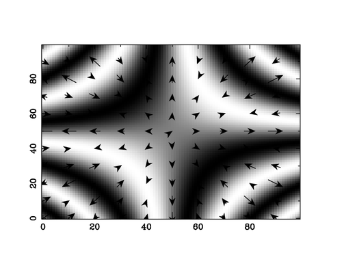
perldl> $x = xlinvals(zeroes(100,100), -5, 5)
perldl> $y = ylinvals(zeroes(100,100), -5, 5)
perldl> $z = sin($x*$y/2)
perldl> imag $z;
perldl> hold;
# Show the partial derivatives wrt. x & y as vectors
perldl> $xcomp = $x*cos($x*$y/2)/2
perldl> $ycomp = $y*cos($x*$y/2)/2
# We want to show only every tenth vector for clarity
perldl> $s = '0:-1:10,0:-1:10';
# Finally we need to map the final 10x10 array to the 100x100 image
perldl> $tr = pdl(0,10,0,0,0,10)
perldl> vect $xcomp->slice($s), $ycomp->slice($s), {Transform=>$tr}
In addition to the simple commands described above, there are a few
convenient commands for drawing simple shapes such as circles, ellipses
and rectangles. These are fairly straightforward commands with similar
options and invocations so we will go through them fairly quickly. A
common issue with these commands as with the poly command is that
they draw filled shapes, if you want outlined shapes to be drawn you
have to set the Filltype option to Outline.
The circle command is probably the simplest, it draws a circle (which
may or may not look like a circle depending on the aspect ratio of your
display - see Setting up the plot area. The user specifies the
radius and the x and y position of the center:
perldl> dev ’/xs’, {Aspect => 1, WindowWidth => 5}
perldl> env 0, 10, 0, 10
perldl> $radius=2; ($x, $y) = (4, 4)
perldl> circle $x, $y, $radius, {LineWidth => 3}
The ellipse function is like the circle function but it requires
the user to specify the minor and major axis and the angle between the
major axis and the horisontal. For ease of use it is probably better to
specify these as options, but if you remember the order you can also
give them directly as arguments to the function (x-position,
y-position, major axis, minor axis, angle):
perldl> dev ’/xs’, {Aspect => 1, WindowWidth => 5}
perldl> env 0, 10, 0, 10
perldl> ellipse 4, 4, {MajorAxis => 2, MinorAxis => 1, Theta => atan2(1,1)}
And finally the rectangle command draws
rectangles where you can give the position of the centre, the length of
the sides and the angle with the horisontal. The operation is very
similar to the ellipse command with the length of the sides of the
rectangle taking place of the major and minor axis.
perldl> dev ’/xs’, {Aspect => 1, WindowWidth => 5}
perldl> env 0, 10, 0, 10
perldl> rectangle 4, 4, {XSide => 2, YSide => 1, Angle => atan2(1,1)}
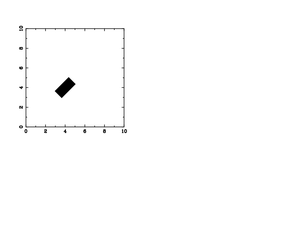Note that Angle and Theta are synonyms.
In addition you can set the sides to be similar by setting the Side
option to the length you require. The lengths are all specified in
data-coordinates (which is why you should do a plot or call env
before using any of these commands).
For other shapes or when these are not sufficiently flexible you should
use the poly command which is called by both rectangle and
ellipse .
The main command for drawing text on the plotting surface is the text
command which at its basic level just draws a string from the given x
and y position:
perldl> dev ’/xs’
perldl> env 0,10,0,10, {Axis => ’GRID’}
perldl> text ’Left justified’, 4, 1
perldl> text ’Centered’, 4, 2, { Justification => 0.5}
perldl> text ’Right justfied’, 4, 3, { Justification => 1.0}
Here we have included grid-lines to show the effect of the different
justifications. Note that Justify is a synonym for Justification,
and that you need to give numerical values for the position. Normally
the text background is transparent as shown here, but you can also set
an opaque background by setting the BackgroundColour option to a
colour name or value (see also the next section).
In addition to the justification option one can also change the angle of
the text using the Angle option and specify the text and/or x and
y as options (the best advice is to either do all or none).
perldl> text {XPos => 1, YPos=> 4, Angle => 25, Text => 'Tilted'}
PGPLOT has extensive support for non-alphanumeric characters in text
strings and also offers reasonable control over the display of
superscripts, subscripts etc. This is all achieved using escape sequences.
In PGPLOT these are all signaled by the character \ .
Thus \u starts a superscript or ends a subscript - it signals a shift
"up". Likewise \d starts a subscript or ends a superscript. Consult
the PGPLOT documentation for a full list.
The only additional text-related function in the PDL::Graphics::PGPLOT
interface is the legend command which draws a legend in the plot
window. This is a more complex routine which can be a time-saver as soon
as you have learned how to use it. It takes the same arguments as the
text command with the exception that the text argument is an
anonymous array of labels for the legend, and that a fourth argument is
accepted which specifies the width of the box in which the legend will
be drawn. If this is not set or it is set to the string Automatic it
will be adjusted to contain the legend with the default font-size (or
that set by the user via the CharSize option).
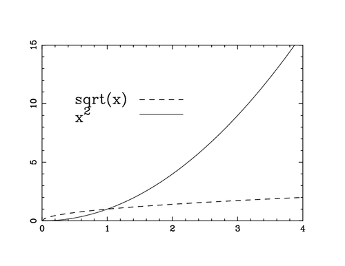
perldl> $x = sequence(100) / 5; $y1 = sqrt($x); $y2 = $x**2;
perldl> env(0, 4, 0, 15);
perldl> line $x, $y1, {LineStyle => 'Dashed', Colour => 'Red'}
perldl> line $x, $y2, {LineWidth => 3, Colour => 'Blue'}
perldl> legend ['sqrt(x)', 'x \backslash u2'], 0.5, 10,
{LineStyle => ['Dashed', undef],
LineWidth => [undef, 3], Colour => ['Red', 'Blue'] }
# ,Width => 1.0 } makes x**2 legend disappear, why?
The idea of the legend command is that you give the line-styles,
line-widths, colours or symbols you want to illustrate as anonymous
arrays to the LineStyle, LineWidth, Colour and Symbol
options. Not very clear? Well, maybe an example will help.
The figure above is an example of legend in use. Two lines are drawn, a
red dashed line and a blue thick line. To annotate this plot using
legend you give the text annotations as an (anonymous) array of
strings, the x and y position of the legend box and an anonymous hash
containing information about the legends to draw as shown in the
example. The options used to specify a particular draw style are the
same as the ones used in the call to line and will undergo the same
translations-note however that you can specify a value of undef
which requests that the current default for the
linestyle/linewidth/colour etc. is used. The
Width option is used to set the width of the legend box and is given
in data coordinates. The idea is that you will create the plot, see
where you want the legends to go and then set the x and y width to the
appropriate settings and redoing the plot, possibly using the replay
mechanism, see Recording and playing back plot commands.
The legend command has several options, the main of which are
illustrated above. The remaining options are useful for tweaking the
appearance, and a full list is as follows:
Text-
The text, this is an alternative to specifying it as the first argument
to the function.
XPos-
The X-position of the text, again as an alternative to specifying it as
the second argument.
YPos-
The Y-position of the text, again as an alternative to specifying it as
the third argument.
Width-
The width of the (invisible) box the legend is drawn inside. This can
also be specified as the fourth argument to the legend command. If
this is set to the string Automatic the width is calculated from the
character size used.
Height-
This can be used as an alternative constraint on size, giving the height
of the legend box. If both Width and Height are specified the
smallest size is used (characters are not compressed or stretched to
fit).
TextFraction-
The fraction of the box set aside for text. The default is 0.5 which
usually is ok. Note that this option used to be called Fraction ,
which still is available as a synonym.
TextShift-
This option allows for fine control of the spacing between the text and
the start of the line/symbol. It is given in fractions of the total
width of the legend box. The default value is 0.1.
VertSpace-
By default the text lines are separated by one character height (in the
sense that if the separation were 0 then they would lie on top of each
other). The VertSpace option allows you to increase (or decrease)
this gap in units of the character height; a value of 0.5 would add half
a character height to the gap between lines, and -0.5 would remove the
same distance. The default value is 0. This option has VSpace as a
synonym (more natural for the TeX-heads out there).
PGPLOT has a two disjoint sets of colours. One set determines the colour
table used when displaying images and is initialised to a grayscale, and
the other is a set of 15 colours used to colour all other plotting
objects. The latter set is accessible through the Colour option
described in Options in plot commands Here we will concentrate on
accessing the lookup-table for image display.
The command used to change the colour table is ctab, which in its
generic form takes six arguments specifying the intensity levels, red,
green and blue colour components, contrast and brightness levels. The
contrast and brightness are optional so that we can say:
perldl> $int = pdl([0, 0.33, 0.66, 1.0])
perldl> $r = pdl([0.5, 0, 0.5, 1])
perldl> $b = pdl([0.0, 0.5, 1.0, 0.5])
perldl> $g = pdl([1.0, 0.5, 0.0, 0.5])
perldl> ctab($int, $r, $g, $b);
perldl> $a = rvals(100, 100)
perldl> imag $a
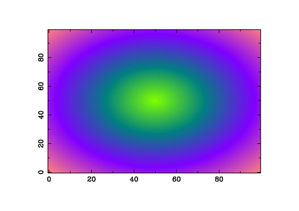...which should display a circularly symmetric figure
with green in the centre, going through blue to red-ish where $a is
at a maximum.
It is however normally sufficient to use the colour tables made
available by PDL::Graphics::LUT. This package makes available a
large number of standard colour tables which can be accessed using the
following commands:
lut_names-
This returns a perl list of the available colour tables.
lut_ramps-
As above, but returns a list of the names of the available intensity
ramps.
lut_data-
And finally the data in the tables can be accessed with this function
which takes as arguments the name of the colour table, and optionally a
scalar determining if the colour table is to be reversed and the name of
an intensity ramp (default is a linear intensity ramp). The function
returns four piddles with intensity and RGB values which can immediately
be passed to ctab.
Note that these commands do not set the colour table for you, you will
still need to call ctab to do that.
Thus to set one of the colour tables in the PDL::Graphics::LUT
package, you do:
perldl> use PDL::Graphics::LUT;
perldl> print "Available tables: ".join(', ', lut_names());
Available tables: aips0, backgr, bgyrw, blue, blulut, color, green,
heat, idl11, idl12, idl14, idl15, idl2, idl4, idl5, idl6, isophot, light,
manycol, pastel, rainbow, rainbow1, rainbow2, rainbow3,
rainbow4, ramp, random, random1, random2, random3,
random4, random5, random6, real, red, smooth, smooth1,
smooth2, smooth3, staircase, stairs8, stairs9, standard
perldl> ctab( lut_data \series default ('rainbow1'));
perldl> imag rvals(100,100);
which should give you a colour table that goes from black through green,
blue and yellow to red.
All the colour tables with their names overlaid can be generated with
this script:
use PDL::Graphics::PGPLOT;
use PDL::Graphics::LUT;
dev("/xs",3,15);
foreach(lut_names()){
print"$_\n";
ctab(lut_data($_));
imag sequence(250,1);
text $_,20,-0.2,{CHARSIZE=>20,LINEWIDTH=>20,COLOUR=>0};
text $_,20,-0.2,{CHARSIZE=>20,LINEWIDTH=>1,COLOUR=>1};
}
And the resultant figure is shown below:
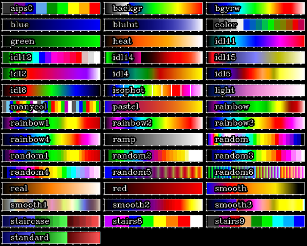
The plot commands do not always lend themselves to easy threading
because it can sometimes be difficult to know what the user intends to
do when (say) an array of images is passed to the imag command. Are
they to be displayed in several plot panels, are they to be plotted on
top of each other, seamlessly plotted next to each other? But even more
complex is the question of treatment of options and how to deal with
these if there are less options than for instance, lines to draw (a
common occurence if you wanted to draw a lot of lines).
That said the PDL::Graphics::PGPLOT interface does have limited
support for threading in the line and points functions. These call
the tline and tpoints internally, and work just like line and
points except that they expect the input y-piddle to be 2D, with
each line in the array plotted against the x-piddle.
The way the options are treated is the most interesting. To set options
for a set of lines, give an anonymous array as argument to that option
with a value for each line. If you give more options than there are
lines, the surplus is ignored. However if you give less, the options are
repeated from the start. Although possibly a bit confusing this is very
powerful because you can get a large number of combinations of colour
and linestyle. For instance if you give 4 colours and 5 linestyles, you
get a total of 20 distinct combinations and should you give 3 linewidths
as well you will suddenly have 80 different styles to work with with
very little typing. Note however that you need to make sure that the
numbers you give are relativel y prime - otherwise you will get much
less possibility, just think of the situation where you have 4
linestyles and 4 colours, they will just loop in harmony and result in
only 4 combinations.
Anyway, let us see how it all works in practice by creating a plot of
sine curves with different frequencies. This is a simple example where
we want to colour all even frequencies with red and all odd with blue
and vary the line-styles as well:
perldl> $pi=4*atan2(1,1);
perldl> $x=zeroes(50)->xlinvals(0, $pi)
perldl> $freq = sequence(10)
perldl> $y = sin($freq*transpose($x))
perldl> line $x, $y, {Colour => [’Red’, ’Blue’], Linestyle=>[0,1,2,3,4,5]}
Have you ever created a good-looking plot on the command line of
an interactive data program, be it PDL, IDL, Matlab, Octave or any other
package, and wished that you could make a quick Postscript copy of it
only to find that you need to redo all the commands? I certainly
have. In the newer versions of PDL this
is thankfully not the case anymore. These have a recording facility
built in. However this is not enabled by default (for reasons described
later in this section), you need to turn it on yourself. The way to do
this is to set the $PDL::Graphics::PGPLOT::RECORDING
variable to a true value:
perldl> $PDL::Graphics::PGPLOT::RECORDING = 1
You can turn this on automatically in the perldl shell if you put
this command in your ~/.perldlrc file. Alternatively you can turn on
recording for each plot device independently by setting the Recording
option to true when starting a device:
perldl> dev '/xs', {Recording => 1}
Note that if you set the variable it must be set after you have
use'd the PDL::Graphics::PGPLOT because this package sets the
variable when it initialises to its default value of zero.
In the following I will focus my attention on using the recording and
playback functions in the perldl shell as I envisage that it will be
most useful there. There are a couple of potential uses in scripts as
well which I will get back to below, but this is not well thought
through yet.
Before we continue it should also be added that the recording facility
is somewhat experimental. In particular it doesn't deal very well with
multi-panel plotting where you jump back and forth between panels. If
you want to do that, make sure you specify the Panel option for every
call.
It is very easy to use the recording facilities with a few less obvious
aspects. An example should go a long way to get you to understand the
basics. First we set up a simple plot using the commands we learned
above:
perldl> use PDL::Graphics::PGPLOT
perldl> $PDL::Graphics::PGPLOT::RECORDING = 1
perldl> $x = sequence(10)
perldl> $y = random(10)
perldl> dev '/xs'
perldl> env(-1, 11, -0.5, 1.5, {Xtitle => 'Number'})
perldl> points $x, $y, {Symbol => 'Plus'}
which should give you a scatter plot on screen. Now after constructing
this fantastic piece of scientific illumination you decided to make a
Postscript version of it, but you are loathe to use the up key to
execute the commands again so you decide to use the recording
facilities.
perldl> $s = retrieve_state()
perldl> dev 'replay_ex.ps/ps'
perldl> replay $s
That is all. These commands should now have created a file called
replay_ex.ps in the present directory.
The retrieve_state commands retrieves the current state of the plot
device and returns a variable to hold this in. This state contains
references to the data plotted and plot commands executed and can be
replayed, or re-executed, at a later stage using the replay command.
You can also turn on and off recording temporarily with the
turn_off_recording and turn_on_recording commands.
This suffices for most situations and should work for any complexity of
plot constructed. There are however a few rules that needs to be
observed and possible pitfalls:
If you turn on recording globally using
$PDL::Graphics::PGPLOT::RECORDING, you must set the variable
before opening a plot device because the value of the variable is
only checked then. If you forget, you can of course always turn it on
with the turn_on_recording function.
The state is cleared whenever the plot window is
erased, or if the user executes the clear_state command. In
particular this occurs when you change plotting device (although if you
use several windows they will each have their own state; see also the
following section), so use the retrieve_state command before you
change device!
The state contains references to the data plotted.
This does not use memory (at least not appreciably!), but it does mean
that an extra reference to the data is kept and the memory to the data
might not be freed when you expect it to. This can be problematic if you
make a lot of image displays. The best ways to avoid this problem in the
perldl shell is to call the clear on the state: perldl> $s->clear() or to re-use the variable next time you call
retrieve_state. Note that this should only be a problem if you
explicitly call retrieve_state.
Finally since only references to the data are
held, make sure you do not modify them before calling replay or you
might end up with a rather different looking plot!
What we covered now is the basic use of the recording facility, which
hopefully will come in handy rather often (which is why I recommend
enabling it permanent ly in the perldl shell as outlined above).
However there are slightly less common uses of the facility that might
come in handy:
The fact that the recording state contains references to the data
enables a somewhat tricky but potentially very useful trick to be
executed: Redoing the plot with adjusted data. Sometimes you make a
complex plot only to discover that you had made an error with your data
and you need to redo it. This is where you can use the recording
functions: Retrieve the state, make adjustments to the data making sure
not to break the link and run replay.
However, although this sounds quite easy it has a few subtleties that
can give surprising results at times. It might therefore be a good idea
to look at a few, very similar and very basic, examples and compare
their effects. So let us first of all open a plot device:
perldl> dev '/xs', {Recording => 1}
NOTE: What I describe here is not well tested and is probably buggy. This needs to be sorted out before finishing - at least I have had a few weird results when trying this out.
We are going to use our example of plotting a parabola, and
replaying it with various parameter sets. Let us therefore define a
couple of variables and plot this, first letting PDL decide on the plot
limits:
perldl> $x = sequence(10); $y = $x*$x
perldl> line $x, $y;
perldl> $s = retrieve_state()
The whole point of this problem is to change the variables, so let us
add 3 to the X-values and replay the command:
perldl> $x += 3
perldl> replay $s
This should give you a part of a parabola from x=3 to x=12, but
now defined by the equation y=pow((x-3),2) . Also the limits of the
plot window should have adjusted themselves to the new x values. Note
that the y values are unchanged.
In the previous example the limits in the plot window adjusted to the
new values for x and y because the line command sets the plot
limits if the plot is not held (such as with an explicit call to
env). But what happens if we redo the example with our own chosen
limits?
perldl> $x = sequence(10); $y = $x*$x
perldl> env (0, 9, 0, 81)
perldl> line $x, $y;
perldl> $s = retrievestate()
perldl> $x += 3; replay $s
The result now should be as shown in Figure XXXXXXXX
which has the same plot limits as before, but a shifted parabola. This
is because the state now remembers the explicit env statement that
you had made and uses that to set the limits.
Finally you must remember that the reference is not to a variable name,
but to a piddle which exists separately from the variable. Thus you
cannot change your data at a whim, so the following change will change
the data back to where we started
perldl> $x -= 3; replay $s
But the following will not plot a parabola
starting at x=5:
perldl> $x = sequence(10)+5.0; replay $s
The reason for this is that the reference kept in the state object is to
the actual data in the previous $x-object and not to the variable
name.
However sometimes you want to give a entirely new dataset to the plot.
Say you wanted to plot a sine curve instead of a parabola. Is there any
way to do that? The answer is yes, but it looks rather ugly, so you
might want to consider whether this is something you want to do
perldl> $x = sequence(10); $y = $x*$x
perldl> line $x, $y; $s=retrievestate()
# Now let us transfer this to a sine plot
perldl> $y -= $y; $y += sin($x)
perldl> replay $s
And voila! a sine curve does step forth. Not exactly elegant,
but this trick allows you to replace any variable used in a complex plot
with a totally different content.
In general the recording facility is of rather limited use in scripts
because you can just as easily encapsulate your plot commands in a
subroutine and just call the subroutine when need be. At present the
only saving is probably in typing, but if the facility is extended to
saving and restoring plot commands the situation would change.
Assume that you are developing a simulation. When you are testing the
code (all written in PDL of course) you have to keep track of how some
data changes at every time-step, but at the same time you want to look
at time-averages. If you were to use what we discussed above you would
probably want to display the time-steps in one panel and the
time-averages in another panel in a plot window. The problem with this
is of course that one panel is updated a lot more often than the other
so you have to waste a lot of time re-plotting the time-average.
Clearly there are two possible ways to improve this: a) have a method
which allows you to plot to a given panel when you want and b) have to
plot windows. It is possible to use the first approach by giving the
Panel option to the plot commands:
dev('/xs');
for (my $i=0; $i<$n; $i++) {
$integrand = func($x, $i);
points $x, $integrand, {Panel => 2};
$sum += $integrand;
}
points $x, $sum/$n, {Panel => 1};
So that this hypothetical code-bit would keep plotting in panel 2,
updating the plot there until the loop is over at which point panel 1 is
updated.
This can be practical, but it is rather limited given the requirement of
giving the panel number every time. Instead an alternative approach
would be to create several plot windows, and for this you really ought
to use an object oriented approach. In this approach every plot device
is a separate object and you call every plot command via this object. So
the previous example would be
my $opt = {Device => '/xs', WindowWidth => 7, Aspect => 1};
my $integrandwindow = PDL::Graphics::PGPLOT::Window->new($opt);
my $integralwindow = PDL::Graphics::PGPLOT::Window->new($opt);
for (my $i=0; $i<$n; $i++) {
$integrand = func($x, $i);
$integrandwindow->points($x, $integrand);
$sum += $integrand;
}
$integralwindow->points($x, $sum/$n);
So, you may say, what is the point with the OO interface except
appeasing the OO fanatics around? It seems to require more typing and I
can see no significant advantage.
In many situations these are valid arguments, if you are just plotting
data on the command line in perldl , for instance, or do not need
multiple plot windows. And at some level the OO interface is primarily a
convenience for the programme r, and it is in fact how the
PDL::Graphics::PGPLOT package is implemented. That said though there are
some (possibly strong) arguments for using the OO interface:
-
You do not pollute your namespace, which means
that you are free to define routines that are called line , points
and so on. This is the main reason why I use this interface personally
when doing simple plots in programs.
-
It is a lot easier to deal
with multiple plot windows when using the OO interface, in fact I would
personally discourage people from having multiple plot windows without
using the OO interface.
Eventually an argument in favour of the OO interface will hopefully be
that it would enable an easier mix of different plotting packages so
that they can all be accessed in a similar way, but we are not there
yet.
To use the OO interface one needs to create a new plot object and then
call the plot routines through this object. If you want several windows,
you just create more objects and switching between these should be
straightforward as you should be able to see in the following examples.
Note that since the OO interface is less suited to use on the command
line, I have opted to show the examples as small code-bits but they
should all be possible to execute from the perldl command line. In
addition this section will merely give several examples of use of the OO
interface and not discuss (again) the different commands since they are
the same as we went through above, it is just a different way of calling
them.
Opening a plot object and plotting a simple plot
To create a plot object we first need to use the PDL::Graphics2D
package - this is merely a shortcut for the true
PDL::Graphics::PGPLOT::Window package, but why type more when it doesn't
gain you anything? Then we create the object using the standard Perl
notation PDL::Graphics2D-new()> :
use PDL;
# Note that we could also access this as
# PDL::Graphics::PGPLOT::Window, but since this is
# shorter I advocate its use.
use PDL::Graphics2D;
# Now create a plot window
my $winopt = {Device => '/xs', WindowWidth => 7, Aspect => 1};
my $w = PDL::Graphics2D->new($winopt);
# Create a simple plot
$x = sequence(10);
$w->points($x, $x*$x, {Symbol => 'Triangle'};
Note how we use the window object ($w) when calling the points
routine - since we didn't use the PDL::Graphics::PGPLOT package
there isn't any function called points in our namespace and we use
the window object to get hold of it. The structure is of course very
similar to what we did in Drawing lines and plotting points
above and there really is little practical difference between the two
interfaces when plotting to only one window.
Therefore let us up the stakes somewhat and try a more practical
example. In many situations you might have one plot where each point in
the plot has many values associated to it (i.e. your plot is a slice in
a multidimensional space). When you examine such data you often would
like to click on a point on your plot and bring up associated data for
that point in a different display - this is an obvious situation for the
OO interface.
The logic for this project is easy: We first create two windows
use PDL;
use PDL::Graphics2D;
# Create two identical windows
my $winopt = {Device => '/xs', WindowWidth => 7, Aspect => 1};
my $data = PDL::Graphics2D->new($winopt);
my $associated = PDL::Graphics2D->new($winopt);
Note that it is a good idea to name your variables containing the window
objects with sensible names for later use.
The next step is to plot data (well, in this example I will merely
create them):
my $x = sequence(10);
my $y = $x**2;
# Plot points using standard symbol
$data->points($x, $y);
which should draw a nice parabola on your screen. Now the user (that is
you, reader) has to click on (or near) a point to select it - we will
then use the X-value of that point to set the period of sine curve:
print "Dear user, please click on (or close to) a point\n";
my ($xin, $yin) = $data->cursor();
# closest will now contain the index of the point closest to
# where the user clicked.
my $closest = minimum_ind(abs($x-$xin) + abs($y-$yin));
my $y_associated = sin($x->at($closest)*$x);
$associated->line($x, $y_associated);
That should now give you a sine wave in the second window with a
frequency dependent on where along the X-axis you clicked. Of course it
would be a lot easier to use $xin, but that wasn't what we tried to
do after all.
This is of course a very simplified example, but it does provide a
framework for a more comprehensive data explorer. From astronomy a
typical example would be to plot scatter-plots for two variables and
bringing up images of the objects by clicking at their data in the plot
window. In other situations the data might be financial data for a set
of companies and clicking on the points would bring up a comprehensive
summary of that company. You are limited by your imagination!
The bottom line is that whatever your requirements are, the OO approach
is probably better when you need more than one plot window, but when you
only use one window, and particularly on the perldl command line.
The Perl module PGPLOT contains interfaces to all PGPLOT functions. The
majority of these functions have alternative interfaces in the PDL
package, but there might be situations when you need to use these
functions directly. And in addition if you are used to using PGPLOT from
before you might prefer the interface, although it is rather
inconvenient when dealing with PDL.
Full documentation for the PGPLOT functions can be found at Tim
Pearson's WWW page: http://astro.caltech.edu/~tjp/pgplot/ . This is
not the place to discuss the details of PGPLOT, but it is interesting to
learn how to access these routines from PDL with piddles as arguments.
Typical PGPLOT drawing functions take as arguments the number of points
and references to perl arrays to give x and y coordinates, thus:
@x = (1,2,3);
@y = (3,-1,7);
pgpoint(3, \@x, \@y, 4);
will plot three points with the x and y values indicates and using
plotting symbol 4 (circle).
The complication for PDL users is that piddles are not perl arrays and
hence have to be converted to array references before they can be passed
to a PGPLOT function. This is achieved with the get_dataref command
which returns a reference to the data in a piddle. Thus the example
above would be written:
$x = pdl(1,2,3);
$y = pdl(3,-1,7);
pgpoint($x->nelem, $x->getdataref, $y->getdataref, 4);
in PDL.
In general you should use the provided wrapper routines for readability,
but feel free to combine the two if you prefer. You should be able to
pick'n'mix functions from the PDL interface and from PGPLOT directly,
although a few subtle bugs might creep in (in particular the handling of
several plot windows).
There are several situations where direct access to PGPLOT might be
necessary. Although hopefully they are not very common, it can be useful
to look at a few to see what the PDL::Graphics::PGPLOT module doesn't
do. Since it is possible to mix PGPLOT commands with the
PDL::Graphics::PGPLOT commands this is not a major problem though,
although it might require you to learn some PGPLOT. So to turn to some
examples, I have decided to list a few simple problems:
-
Drawing several plot boxes on top of each other to
get differently shaded grids. This is done in one of the demonstration
programs that come with PGPLOT and can't be easily done in
PDL::Graphics::PGPLOT without some playing around with the
PlotPosition option. It is a lot easier to call pgbox directly.
-
Complex contour plots - in particular
non-rectangular. At present there is no support for non-rectangular
contour plots in PDL::Graphics::PGPLOT, and neither is any support
planned for the near future. You are advised to read the PGPLOT
documentation for pgconx and have a look at demo #3 in the PGPLOT
distribution for an example.
The bottom line is that as your plots get more and more complex you
might end up in a situation where you need the finer control offered by
the PGPLOT package, but for day-to-day use it is hoped that
PDL::Graphics::PGPLOT will address most people's needs. And if doesn't
then let us know!
Original text from "PDL - Scientific Programming in Perl" (2001) Chap. 4
Authors: Karl Glazebrook, Marc Lehmann, John Cerney, Christian Söller,
Jarle Brinchmann, Robin Williams, Christopher Marshall, Tuomas J. Lukka,
Doug Hunt, Tim Pickering.
Modified to LyX by Chris Marshall for PDL 2.4.3, December 2006.
Converted to POD format by Matthew Kenworthy, May 2010.